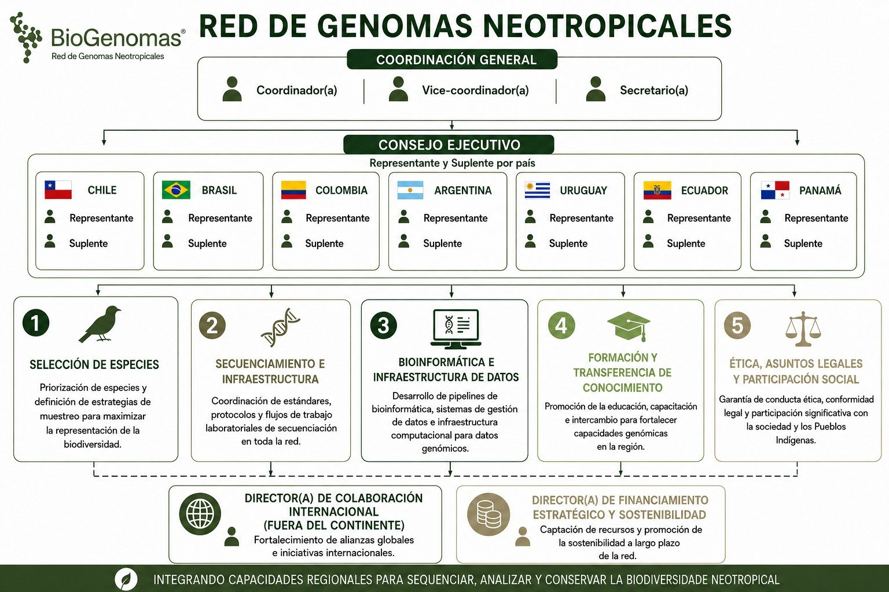

Sobre o comitê¶
A Rede BioGenomas¶
A Rede de Genomas Neotropicais (Rede BioGenomas) articula iniciativas nacionais da Argentina, Brasil, Chile, Colômbia, Equador, Panamá e Uruguai para gerar, gerenciar, analisar e utilizar genomas de referência da biodiversidade neotropical.
A Rede é conduzida por uma Coordenação Geral e um Conselho Executivo, com um(a) representante e um(a) suplente por país, e organiza seu trabalho científico e técnico em cinco comitês:
-
1 · Seleção de Espécies e Coleções
Priorização de espécies e articulação com coleções, museus, herbários e biobancos.
-
2 · Sequenciamento e Infraestrutura
Protocolos, laboratórios e plataformas de sequenciamento na região.
-
3 · Bioinformática e Infraestrutura de Dados
Pipelines, padrões de metadados e gestão de dados genômicos (FAIR e CARE).
-
4 · Formação e Transferência de Conhecimento
Este comitê. Educação, capacitação e intercâmbio para fortalecer as capacidades genômicas na região.
-
5 · Ética, Assuntos Legais e Participação Social
Conduta ética, conformidade legal e participação da sociedade e dos povos indígenas.

Objetivo do comitê¶
O Comitê de Formação e Transferência de Conhecimento tem como objetivo fortalecer as capacidades científicas, técnicas e humanas necessárias para o desenvolvimento da genômica da biodiversidade na América Latina, promovendo a circulação de conhecimentos, metodologias e tecnologias entre os países e instituições participantes.
Escopo¶
- Diagnóstico contínuo das necessidades de formação identificadas pelas iniciativas nacionais e das lacunas regionais.
- Atividades que cobrem todas as etapas para produzir, analisar e utilizar genomas de referência: manejo e processamento de amostras, sequenciamento, bioinformática, análise genômica, gestão de dados, interpretação de resultados e aspectos éticos e legais.
- Diversos formatos: cursos, oficinas, mentorias, estágios, intercâmbios entre instituições, treinamento cruzado e formação de formadores.
- Prioridade a quem tem menos acesso a infraestrutura, recursos ou formação especializada, para uma participação regional mais equilibrada.
- Divulgação científica para públicos não especializados: estudantes da educação básica, professores, comunidades locais e a sociedade em geral.
- Articulação com o Earth BioGenome Project (EBP), suas redes afiliadas e outras iniciativas nacionais e internacionais.
Como funciona¶
| Integrantes | Até seis membros, com representação equilibrada de países (no máximo dois por país). |
| Coordenação | Um(a) coordenador(a) e um(a) vice-coordenador(a) de países diferentes, com mandato de três anos. |
| Consultores(as) | Especialistas convidados(as) para atividades pontuais, com caráter consultivo. |
| Planejamento | Plano Trienal de Trabalho com objetivos, produtos e indicadores, avaliado pelo menos uma vez por ano. |
| Articulação | Trabalho conjunto com os outros quatro comitês e reuniões trimestrais com a Coordenação Geral. |
Conheça as pessoas do comitê na página Equipe.
Fonte
Baseado no documento Comités de Trabajo – Red de Genomas Neotropicales: documento orientador para formación y ejecución de tareas, aprovado pelo Conselho Executivo em 31 de agosto de 2026.
Contato¶
- Rede BioGenomas: genotropics.org
- Para assuntos de cursos, fale com a coordenação do comitê ou abra uma issue no repositório do GitHub.